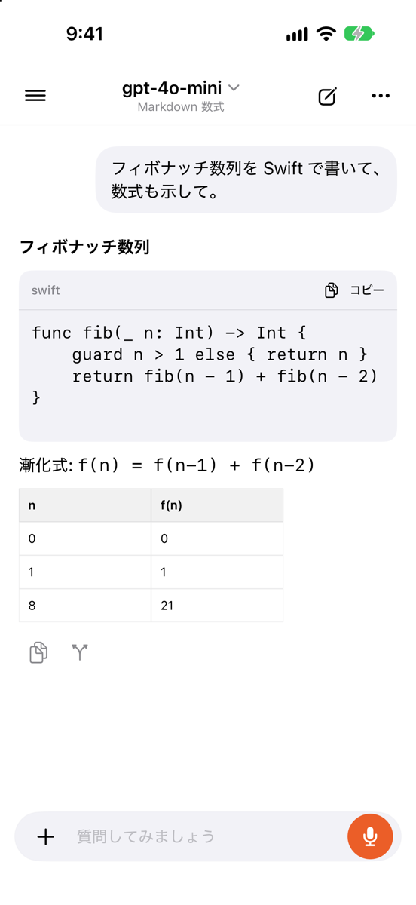

Trò chuyện với một mô hình
Câu trả lời phát trực tiếp với Markdown, tô sáng mã, toán học và tệp đính kèm hình ảnh. Chỉnh sửa, tạo lại và lưu các biến thể câu trả lời.
Mang AI của bạn · iPhone & iPad
YamabikoChat là ứng dụng chat AI miễn phí cho iPhone và iPad. Kết nối các dịch vụ AI bạn đang dùng — bằng khóa API hoặc tài khoản được hỗ trợ — rồi trò chuyện với một mô hình, so sánh hai mô hình cạnh nhau, hoặc để hai mô hình nói chuyện với nhau.
Tải xuống miễn phí. Bạn thanh toán trực tiếp cho nhà cung cấp AI theo mức sử dụng.



Tóm tắt nhanh
Chế độ
Chọn chế độ phù hợp với câu hỏi, chứ không phải ngược lại.
Câu trả lời phát trực tiếp với Markdown, tô sáng mã, toán học và tệp đính kèm hình ảnh. Chỉnh sửa, tạo lại và lưu các biến thể câu trả lời.
Gửi cùng một câu lệnh đến hai mô hình và đọc cả hai câu trả lời cạnh nhau. Cách Dual hoạt động
Chọn hai mô hình, một chủ đề và số lượt, rồi xem chúng thảo luận với nhau.
Để mô hình giao một phần yêu cầu cho các tác nhân con — mỗi tác nhân có thể dùng mô hình riêng — và theo dõi tiến độ trong cuộc trò chuyện.
Tính năng
Viết, tóm tắt, dịch, mã và toán học — với những công cụ mà một trợ lý thực sự cần.

Dành cho ai
Hướng dẫn
Tải YamabikoChat cho iPhone và iPad.